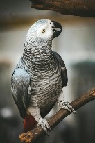

Grey Parrot
Grey parrots, known for their exceptional intelligence and remarkable ability to mimic human speech, have become one of the most popular pet birds worldwide. These stunning creatures, particularly the African Grey, require dedicated care and attention to thrive in a domestic environment. Providing proper nutrition, mental stimulation, and a comfortable habitat is essential to their well-being. This guide offers comprehensive insights into caring for grey parrots, helping ensure they live a healthy and happy life, all while building a strong bond with their owners.

Nutrition
- Seeds – Sunflower, millet, safflower (should be limited to avoid obesity).
- Fresh fruits – Apples, bananas, grapes, berries, mangoes, papayas, and melons.
- Vegetables – Leafy greens like spinach, kale, carrots, sweet potatoes, bell peppers, broccoli, and peas.
- Nuts – Almonds, walnuts, pecans, and pistachios (unsalted and in moderation).
- Legumes – Lentils, chickpeas, beans, and peas.
- Whole grains – Brown rice, quinoa, oats, and barley.
- Cooked eggs – A source of protein, given occasionally.
- Cooked pasta – As a treat in small amounts.
- Sprouted seeds – A more nutritious form of seeds.
- Calcium supplements – Cuttlefish bone or mineral blocks for beak health and calcium.
Replicating the Habitat of Gray Parrots at Home
Creating a suitable environment for gray parrots as pets requires replicating their natural habitat to ensure their well-being. Begin with a spacious cage, ideally measuring at least 24 x 24 x 36 inches, with horizontal bars and natural wood perches to mimic tree branches. Environmental enrichment is vital; provide various toys, such as puzzles and foraging items, to stimulate their intelligence and keep them engaged. Maintain a warm and humid atmosphere, ideally between 70°F and 80°F, with humidity levels around 50-70%. A balanced diet is essential, consisting of fresh fruits, vegetables, high-quality pellets, and nuts, while avoiding toxic foods like avocado and chocolate. Gray parrots thrive on social interaction, so spend time daily bonding with your pet and allow supervised out-of-cage exploration. Additionally, include a quiet area within the cage for resting and nesting, ensuring your parrot has a safe retreat. Regular veterinary check-ups and a clean living space are crucial for preventing illness. By providing these elements, you can create a nurturing environment that allows your gray parrot to thrive and lead a fulfilling life.
Behavior
Gray parrots are renowned for their intelligence and engaging personalities, making them delightful companions. They are highly social creatures that thrive on interaction, often forming strong bonds with their owners. Regular social engagement is essential, as they can become lonely or depressed without sufficient companionship.
These parrots are also known for their exceptional vocal abilities, capable of mimicking human speech and sounds, which adds a playful dynamic to their behavior. Their curiosity drives them to explore their surroundings, so providing a safe space for them to investigate is crucial.
Gray parrots are sensitive and can exhibit a range of emotions, including joy, fear, and anxiety. It’s important to recognize their body language, such as fluffing feathers when content or biting when threatened. Understanding these signals can enhance the bond between you and your parrot. With proper socialization, mental stimulation, and patience, gray parrots can be affectionate, playful pets that bring joy to any household.